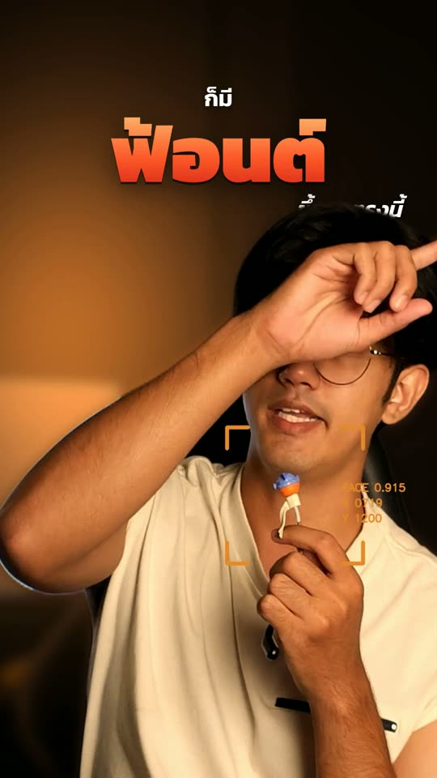
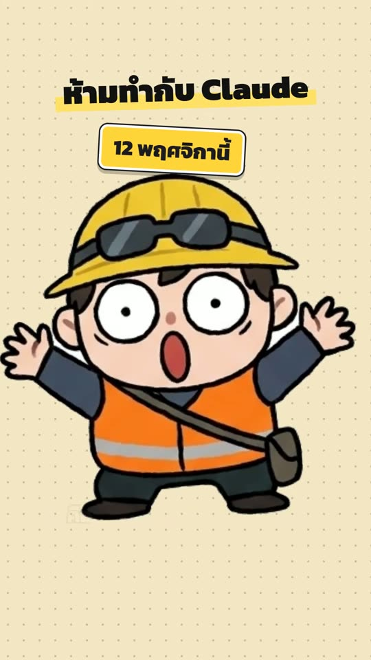
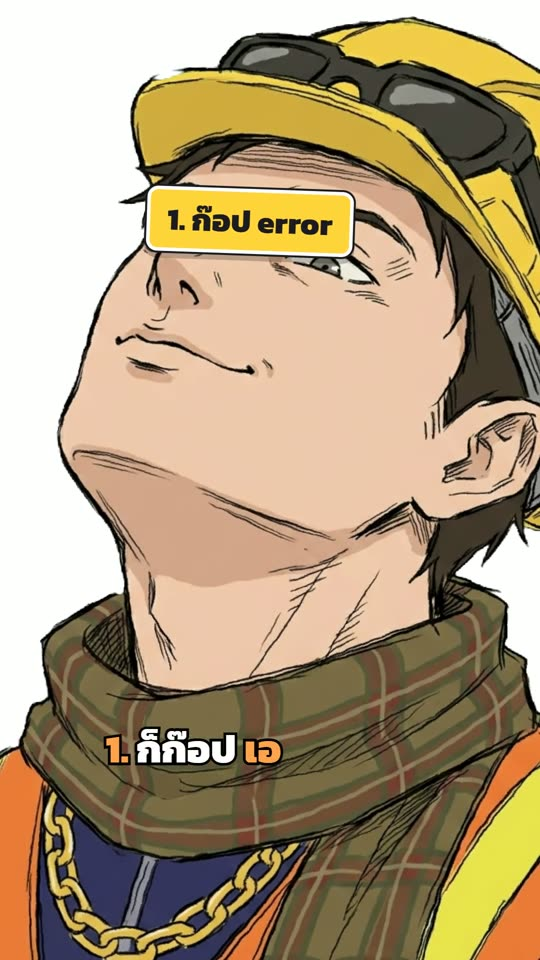
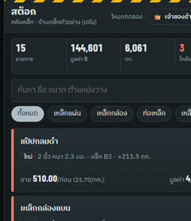
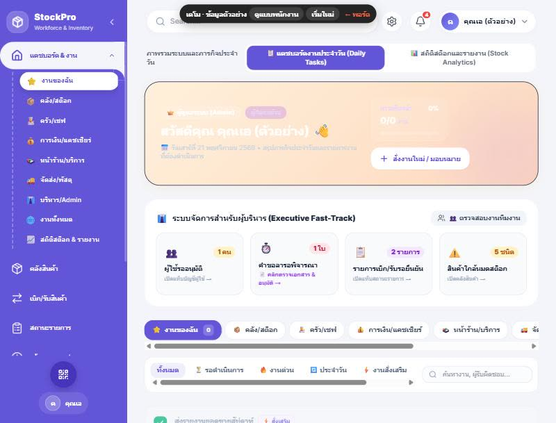
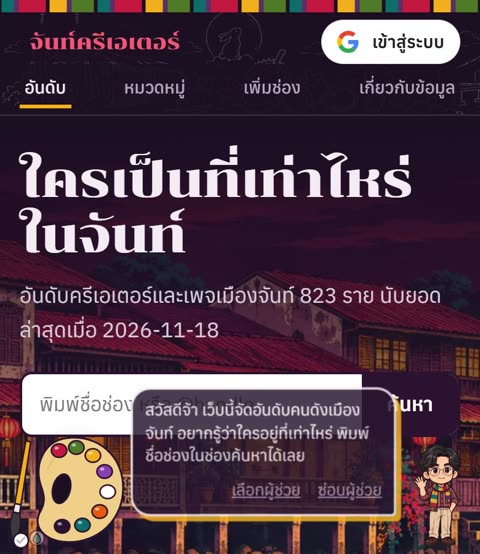
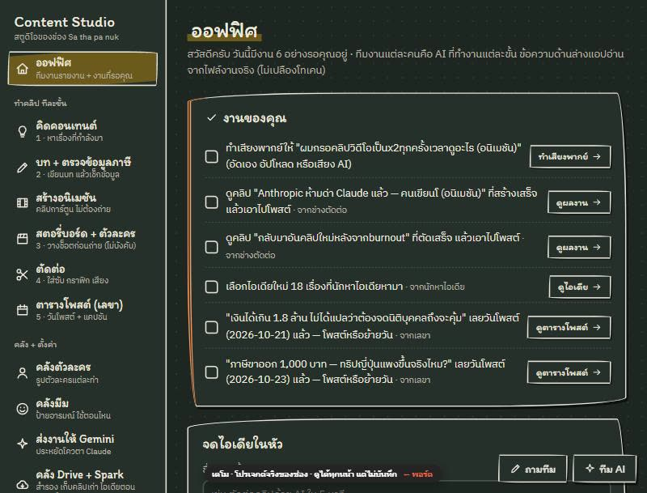

Content
Creator
Creator
Content Creator · Vibe Coder
verb & noun
ทำคอนเทนต์การเงิน/ภาษี และสร้างระบบหลังบ้านให้ร้านค้า
กำลังทำของใหม่ชื่อ ✎Content Studio ,
แอปในเครื่องที่ช่วยคิดไอเดีย เขียนบท ตรวจข้อมูลภาษี และตัดคลิป TikTok ให้ทำคลิปได้โดยไม่หมดไฟ
ใช้ทำคลิปจริงแล้ว ลองเปิดดูแอปตัวจริง ↗ ✎
เลื่อนลงเรื่อย ๆ ผลงานจะเปลี่ยนไปทีละหมวด
ซับไทยทีละคำ กราฟิกเคลื่อนไหว เสียงประกอบ และอนิเมชันจากเสียงพากย์




สต็อก ขาย การเงิน และงานหลังบ้าน ออกแบบจากหน้างานจริง


เขียนเองด้วย vibe coding และใช้งานจริงทุกวัน

Business Computer & Management
เชื่อมโลกธุรกิจเข้ากับระบบไอที ถนัดการออกแบบระบบหลังบ้าน การจัดการข้อมูล และวาง Workflow ให้ธุรกิจทำงานได้จริงและลดงานซ้ำซ้อน
Restaurant Operations · SOP · POS · ระบบหลังบ้าน
ลุยงานร้านอาหารจริงตั้งแต่หน้าบ้านถึงหลังบ้าน วางมาตรฐานการทำงาน (SOP) จัดการระบบ POS สต็อก ต้นทุน และ Workflow การทำงานให้ร้านรันได้ลื่นไหล
Hands-on Craft & Raw Material Management
เริ่มทำงานจริงตั้งแต่ก่อนเรียนมหาวิทยาลัย ฝึกความละเอียด วินัย ความอดทน และการจัดการวัตถุดิบหน้างานจริงทุกวัน
ใบรับรองทั้งหมด 41 ใบ กดที่ใบไหนก็ได้เพื่อดูเต็ม ๆ
zinedinekkb@gmail.com
ส่งอีเมล ✉
ผู้ติดตามรวมทุกช่องทาง ณ เดือนพฤศจิกายน 2026
ผมทำคลิปสั้นเรื่องภาษี การเงิน การตลาด และ vibe coding สำหรับคน Gen Z และผู้ประกอบการรุ่นใหม่
ทำงานจริงมาตั้งแต่ก่อนเข้ามหาลัย ทั้งเป็น Butcher 2–3 ปี และลุยงานร้านจินข้าวมันไก่สไตล์สิงคโปร์อีกเกือบ 4 ปี ก่อนจะมาต่อยอดในสายการจัดการ คอมพิวเตอร์ธุรกิจ (ว่าที่เกียรตินิยมอันดับ 1)
ชอบเอาประสบการณ์หน้างานจริง ทั้งเรื่องร้านอาหาร SOP ระบบ POS และระบบหลังบ้าน มาผสมกับการเขียนโค้ดสร้างเครื่องมือของตัวเอง เพื่อให้ทำงานและทำคลิปได้นาน ๆ โดยไม่หมดไฟ ☺